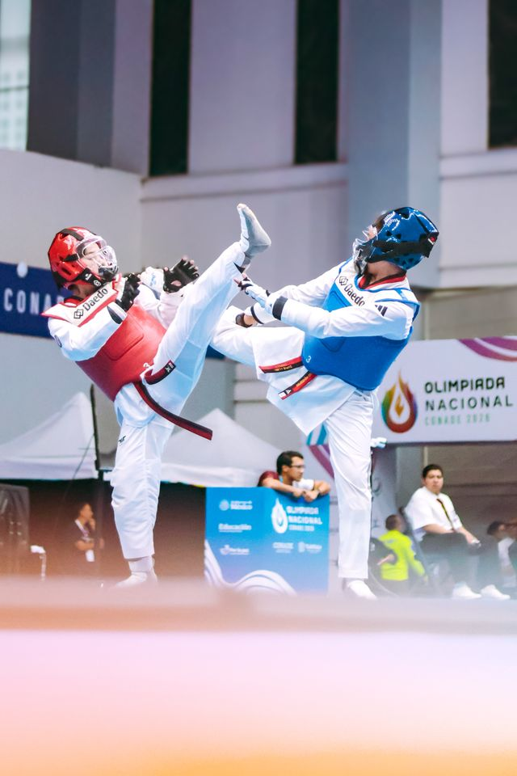

2026 • NATIONAL CHAMPIONSHIP
National Poomsae Gold Medal
D. S. Samaraweera won the gold medal in Women's Poomsae Green Belt at the National Taekwondo Poomsae Championship 2026.
🥇 Gold Medal — Women's Poomsae Green Belt